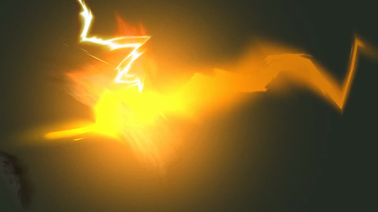
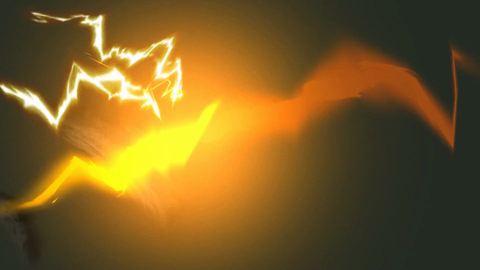
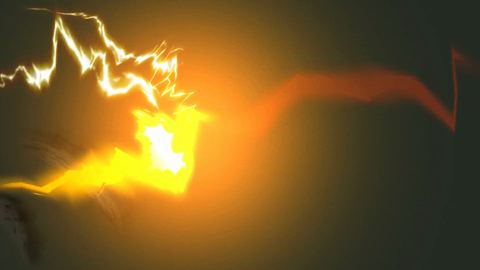
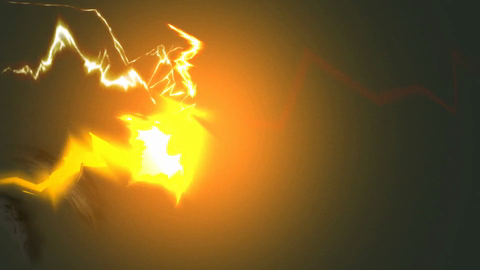
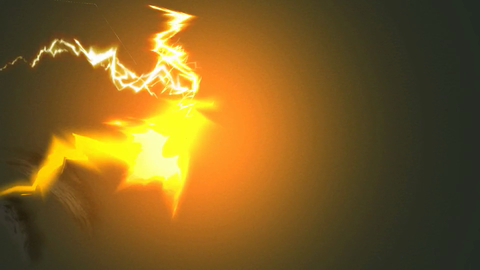
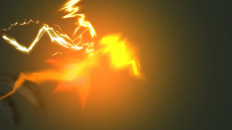
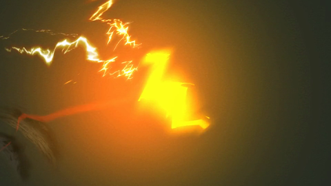

057 · 原始帧 101—125
101 · Δ 2.3102 · Δ 2.1103 · Δ 2.2104 · Δ 2.1105 · Δ 2.6106 · Δ 4.2107 · Δ 4.1108 · Δ 4.7109 · Δ 6.1110 · Δ 7.1111 · Δ 8.3112 · Δ 9.5113 · Δ 7.0114 · Δ 7.5115 · Δ 11.5
116 · Δ 11.1
117 · Δ 13.1
118 · Δ 12.4
119 · Δ 9.2
120 · Δ 8.6
121 · Δ 11.6
122 · Δ 10.0123 · Δ 7.4124 · Δ 12.0125 · Δ 14.4